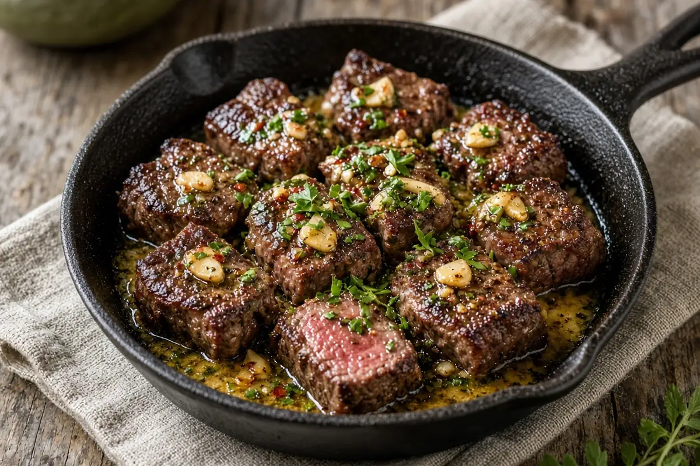

Garlic Butter Steak Bites
Bite-size sirloin seared hard in a hot skillet, then tossed in sizzling garlic butter with a little red pepper and fresh parsley.

Adapted from jocooks.com
4 servings
By
Yield: 4 servings
Prep:
Cook:
Total:
Difficulty: Easy
Ingredients
- 1 Tbsp olive oil
- 1 1/2 lb sirloin steak, cut into bite-size pieces (or strip, tenderloin, or ribeye)
- 1/2 tsp salt, or to taste
- 1/2 tsp pepper, or to taste
- 2 Tbsp unsalted butter
- 4 cloves garlic, minced
- 1/4 tsp red pepper flakes
- 1 Tbsp fresh parsley, chopped
Instructions
- Heat the olive oil in a large skillet over high heat until shimmering. Add the steak in one layer (work in batches if needed) and season with the salt and pepper.
- Sear without stirring for 2 minutes, then stir and cook 2 minutes more, until browned. Move the steak to a plate.
- Lower the heat to medium and melt the butter in the same skillet. Add the garlic and red pepper flakes and stir 30 seconds, just until fragrant and starting to turn golden.
- Pour the garlic butter over the steak, toss, sprinkle with the parsley, and serve.
Notes: AnyList showed this doubled; amounts are back at 1x. The saved list called the searing fat butter while the steps used olive oil; oil handles the high heat better, so it is listed here. Ribeye makes the richest bites.